遊びで植物を育てよう
2021/08/29
サクランボの種と芽が消えました。
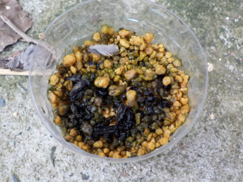
カビで全部腐ったかな。
鳥の羽根が落ちてるってことは鳥が食べたのかな。
何にしても全滅で残念でした。
【さくらんぼTOP】 【果物TOP】 【園芸TOP】
2021/08/15
サクランボにカビが生えていました。
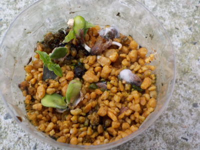
カビが生えるって思っていませんでした。
カビが広がらないといいです。カビが生えるってことは多分環境が悪いんでしょうね。
カビ菌が充満していると思うので、密閉をやめて育てることにしました。
【さくらんぼTOP】 【果物TOP】 【園芸TOP】
2021/08/08
サクランボの芽が出ました。
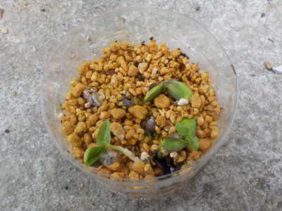
芽が出たといっても、まだ途中かな。
茎が出て立ち上がっていません。これから起き上がるんでしょう。
今のところ発芽率は悪いですね。春に芽がでるものもあるかもしれません。
【さくらんぼTOP】 【果物TOP】 【園芸TOP】
2021/07/10
サクランボの種を蒔きました。
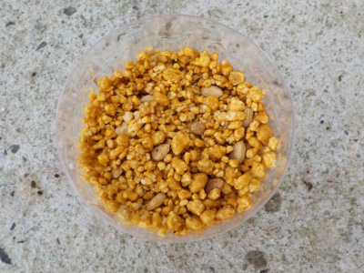
ペットボトルに種蒔きしました。
この夏に芽が出るのと、来年の春に芽が出るのではどっちがいいんでしょうね。
大きく育つまでには沢山時間が必要なので、それくらいの差は気にしなくていいかな。
【さくらんぼTOP】 【果物TOP】 【園芸TOP】
2021/07/09
サクランボを買いました。
サクランボって値段が高いですね。たぶん1年に1回しか買えない。
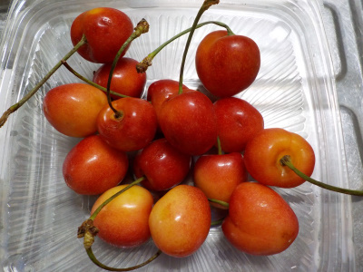
サクランボの種類は書いてなかったので分からないです。
とっても美味しかった。
なので種蒔きします。
実は採れないかもしれないけど、花見はたぶんできますよね。
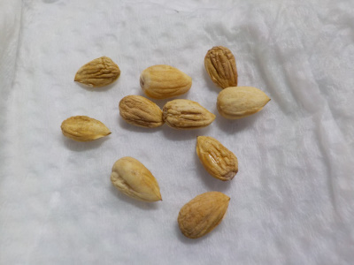
種の殻を割って取り出した中身です。
種がシワシワです。種が育っていないかもしれませんね。
近いうちにペットボトルに蒔こうと思っています。
【さくらんぼTOP】 【果物TOP】 【園芸TOP】
2018//
サクランボは枯れました。2種あって1本は枯れていないんですが、1本だけあっても意味ないので伐採です。
木は巨大になるんですけど、実がほとんど出来ませんでした。
きっと土地とか気候とか向いていなかったんでしょう。
もうサクランボを植えることはないな。
【さくらんぼTOP】 【果物TOP】 【園芸TOP】
2017/11/26
サクランボの剪定をしました。
葉っぱが全部落ちていたので、剪定しました。
【さくらんぼTOP】 【果物TOP】 【園芸TOP】
2017/05/07
サクランボの実が一部茶色になっています。
さくらんぼの実が出来たんですが、一部茶色い。
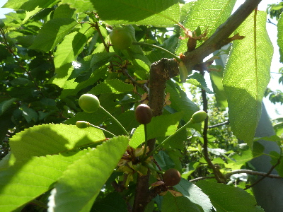
病気？
なんでしょうね。
【さくらんぼTOP】 【果物TOP】 【園芸TOP】
2017/04/16
サクランボの花が咲いたので受粉しました。
花が咲いたら受粉です。

でも低い場所しか出来ないな。
梯子まで出してやろうとは思わない。
虫ががんばってくれるといいな。
【さくらんぼTOP】 【果物TOP】 【園芸TOP】
2015/04/18
今年も花が咲いたので受粉しました。
毎年花は咲くんですが、虫の被害にあうので、サクランボはまだ実ったことがありません。
今年こそと、期待をこめて受粉しました。
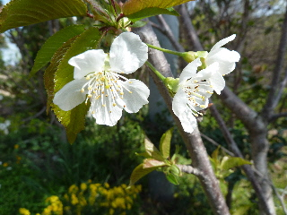
出来るといいな。
【さくらんぼTOP】 【果物TOP】 【園芸TOP】
2014/04/19
今年もさくらんぼの花が咲きました。
花の数が多くないので、そんなに綺麗じゃないですが、2つ並んでて可愛いです。
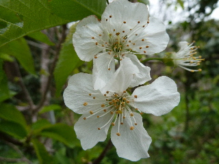
もっと沢山花が付けば受粉とかするんですけど、ちょっと少ないので花だけ楽しもうと思います。
【さくらんぼTOP】 【果物TOP】 【園芸TOP】
2013/09/14
サクランボに大きな幼虫が！
ここまで大きくなるまでに、沢山の葉っぱを食べたんでしょうね。
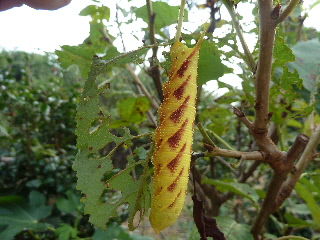
きっと大きな蛾になるところだったんだろうなー。
【さくらんぼTOP】 【果物TOP】 【園芸TOP】
2013/05/26
サクランボが食べられてる。
あーあ、虫付いてる。
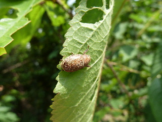
コガネムシ？
葉っぱ美味しい？さくらんぼも食べた？
増えるといけないから今度駆除しよう。
【さくらんぼTOP】 【果物TOP】 【園芸TOP】
2013/04/13
サクランボの花が咲きました。
何年か前に買ったサクランボの木ですが、今年初めて花が咲きました。

白いんですね。
ちょっとしか咲いていないので、実は期待できないかな。
来年沢山咲くといいな。
【さくらんぼTOP】
【果物TOP】
【園芸TOP】
鉢植えで花と実を楽しみたいですが、どうでしょうね。
地植えで失敗しているので、たぶんもう地植えはしない。
【おいしいものを食べよう。】【たくさん寝よう。】
【ソロ活をしよう!】【季節感のあることをしよう。】【動画視聴はほどほどに。】【当サイトの全てのコンテンツは無断転載禁止です。】